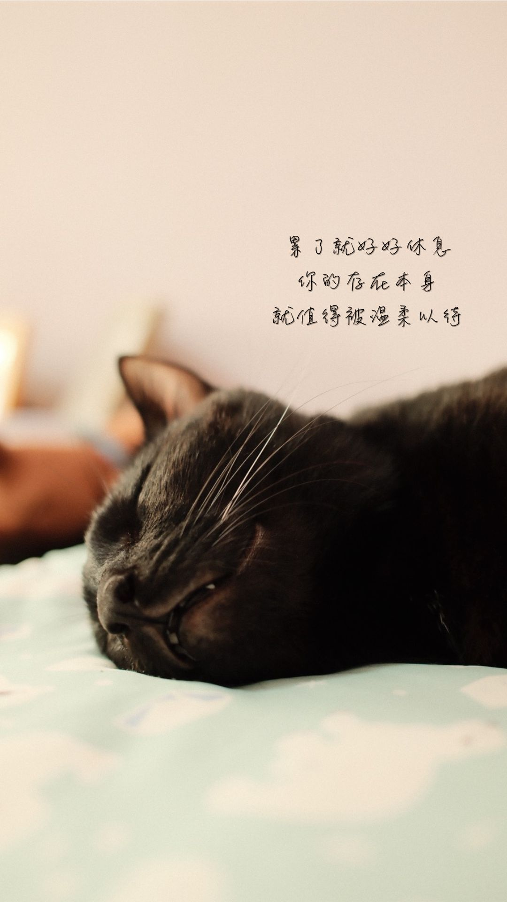

候機室的真心話
CHECK-IN 登機報到
登機證
BOARDING PASS
TY-···
出發
FROM
此刻
前往
TO
航程
CLASS
✦ 道謝
TY
♥ 道愛
LV
如果生命只剩最後一週，你最想對他說什麼？
0 / 20
乘客
PASSENGER
匿名旅客
航程限重
LIMIT
20 字內
登機門
GATE
大螢幕
完成報到
CHECK IN
不記名。你的真心話會以航班的形式出現在攤位的大螢幕上。
報到完成，祝你旅途平安
🎁 航程祝福桌布
1 / 7
🎲 換抽一張

📲 發佈到 IG 限動／分享
📥 直接下載桌布
💡 小撇步：也可以直接「長按上方圖片」儲存到手機相簿喔！
✈ 追蹤「探心知己社」IG
再寫一張登機證
這裡沒有超重行李，只有心底最重要的一句話。